このページでは、まず任天堂の『いきものづくり クリエイトーイ』と『引ク押ス』をご紹介します。どちらも『ニンテンドーeショップ』でしか手に入らないオリジナルのタイトルです。
『いきものづくり クリエイトーイ』は、ある星に住む不思議ないきもの「クニャペ」を、お絵描き感覚で自由に作って、命を吹きこむことができる、というユニークなソフトです。
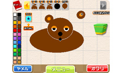
クニャペの作成は、顔や体や足、目や口など、いくつかの単純なパーツをタッチペンで組み合わせて置くだけでよく、小さなお子さまでもすぐに作れます。形だけではなく、名前、声の種類、語尾も自分で決めることができます。
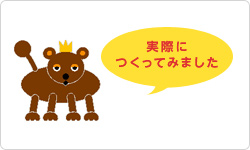
筆者は絵心がないので、とりあえず適当にパーツをいくつか配置しただけですが、実際に作ってみると、どんなにムチャな形をしたクニャペでも、勝手に生き生きと動き出すのでビックリしました。
しかも、なんとも表現しがたい、予想外の動きやしゃべり方（鳴き声？）を見せてくれます。自分で作ったからなのか、不思議な愛着もわいてきます。
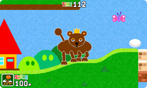
クニャペができあがると、今度は「おさんぽ」に行くことができるようになります。クニャペを見ているだけでも楽しいですが、弾力のあるボールをタッチペンを使って引っ張ったり弾いたりするような操作感覚は、これまた独特でクセになりそうです。
おさんぽ中は、クニャペに食べものをたくさん食べさせてタマゴを産ませたり、制限時間内にカギと宝箱を探したり、ほかのクニャペと出会ったりと、さまざまな遊びが用意されています。
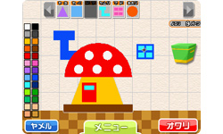
おさんぽする「ふーけい（マップ）」に出てくる樹木などのデザインも、自由に作りかえることができます。ちなみに、十字ボタンの上下で画面を拡大縮小したり、STARTボタンで全体マップを確認できるので、おさんぽ中に何がどこにあるのかわからなくなったら使ってみてください。
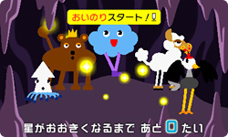
最初のクニャペでひととおり遊んだら、どんどん新しいクニャペを作って、おさんぽさせてみましょう。クニャペが産んだタマゴからいろんなものが出てきたり、クニャペが増えると「おいのり」が始まって、あなたの星がよりにぎやかになる機能が使えるようになります。
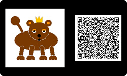
たとえば、ニンテンドー3DS付属のARカードを使って、実際の風景の中にクニャペがいる3D写真を撮影することができます。また、自分が作ったクニャペやクニャペの写真をみんなに見せたくなったときのために、データを交換するためのQRコードの作成や読み取り撮影の機能も利用できます。
さらには、クニャペや写真のデータを「すれちがい通信」で交換したり、「インターネットブラウザー」を使ってネット上に公開することも可能です。
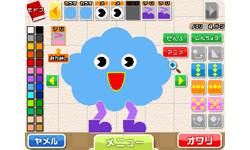
クニャペ作りは誰でもすぐにできるくらい、本当にとても簡単です。その一方で、パーツの種類は非常に豊富で、色の変更もできるので、さまざまな可能性を秘めています。筆者がインターネットで探してみたところ、本当に同じソフトで作ったのかと驚くような、凝りに凝ったクニャペがたくさん公開されていました。みなさんも、じっくりクニャペ作りを楽しんだり、友だちからいろんなクニャペをもらったり、いろんな遊び方を試してみてください。
『引ク押ス』は、その名のとおり、高く積み上げられたブロックを引いたり押したりしてゴールを目指す、パズルアクションゲームです。
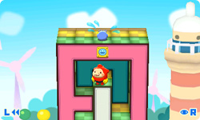
このブロックでできたコースのことを「ヒクオス」と呼びます。どことなくお相撲さんチックな主人公・マロを操作し、ブロックを手前に引いたり、奥へと押し込んだりしながら、うまい具合に段差を作り、それをジャンプで上って、各ヒクオスの頂上付近に閉じこめられてしまった子どもたちを助けられればゴールです。
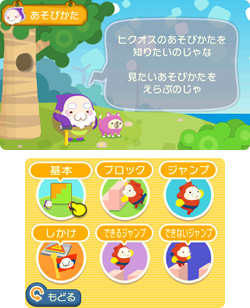
パズルというと難しいイメージがあるかもしれませんが、ルールはとてもシンプルで、ゲーム開始当初に現れるヒクオスづくりの名人であるおじいさんのアドバイスどおりにプレイすれば、自然とコツがつかめます。
「あそびかたを見る」という、いつでも入ることができるモードも用意されているので、もしわからないことがあったとしてもすぐに確認できます。
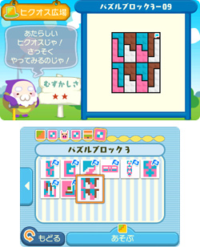
『引ク押ス』には250以上ものヒクオスが用意されています。
しかも、少しずつ難易度の高いヒクオスが登場してくるので、いつの間にかプレイも上達し、どんどんとヒクオスをクリアできるようになります。
もし難しくてどうしてもクリアできないヒクオスがあったら、いったんそのヒクオスをスキップして、次のヒクオスに進むこともできます。ほかのヒクオスをたくさんプレイして、あとからやり直してみると、意外なほど簡単にクリアできたりするはずです。
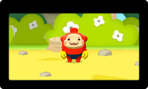
筆者は面白くて思わずハマってしまいましたが、丸1日ぶっ通しでプレイしても全部クリアするのは難しいのではないか、というくらいのボリュームでした。キャラクターはとても可愛らしく、パズルが苦手という人でも、気軽に楽しく頭の体操ができるゲームだと思います。
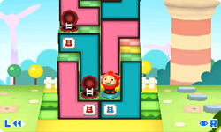
中盤以降のステージでは、ふたつのブロック間をワープできる不思議な「マンホール」や、踏むと一部のブロックが一気に手前に飛び出してくる「引き出しスイッチ」といった、さまざまな仕掛けも登場します。
また、単なる色つきのブロックではなく、積み上げられたヒクオス全体がどこかで見たような形をしているステージもあり、用意されているヒクオスはバリエーションも豊かで長く遊べそうです。
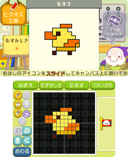
さらに『引ク押ス』には、おじいさんからもらう「お手本」などを参考にしながら、自分だけのヒクオスを作れるエディットモードが用意されています。とりあえず気軽にお絵かき感覚でヒクオスを作成して、それを実際にプレイしてゴールの位置を決める、というのがオススメの作り方です。
ヒクオスの面白さをアップするコツのひとつとしては、ヒクオスの中に行き止まりになりやすい場所をいくつか作り、そのうちのひとつとゴール直前を「マンホール」で結ぶ、といったやり方もあります。「見た目に楽しく、遊んで面白いヒクオス」を目指して作ってみましょう。
ちなみに、このエディットモードで作成したヒクオスをQRコード化して、ほかのプレイヤーと受け渡しできる機能のついたアップデート版の配信も予定されているとのこと（※）。
QRコード化したヒクオスを画面に表示して、友だちのニンテンドー3DSに読み込んでもらったり、インターネットで自作ヒクオスのQRコードを公開する、といったことも可能になるので、すでに『引ク押ス』をたっぷりやりこんでいるという方も、ぜひチェックしてみてください。
QRコード化したヒクオスを画面に表示して、友だちのニンテンドー3DSに読み込んでもらったり、インターネットで自作ヒクオスのQRコードを公開する、といったことも可能になるので、すでに『引ク押ス』をたっぷりやりこんでいるという方も、ぜひチェックしてみてください。
※
『引ク押ス』のアップデート版（QRコード化機能有りバージョン）が、近日中に配信予定です。現在配信されている『引ク押ス』（QRコード化機能なしバージョン）をすでにご購入されている方は、無償でダウンロードできます。また、アップデート版では、自作のヒクオスを含め、すべてのセーブデータはそのまま引き継がれます。詳しい情報については、公式ホームページでご確認ください。